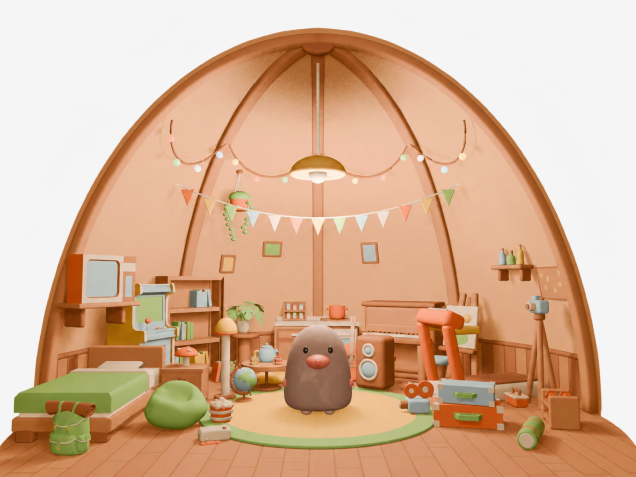

Figma "03. Screens"의 땅굴 렌더를 코드로 만든 3D와 겹쳐 봅니다. 가구 배치는 코드로 하고, 점토 질감은 조명·재질·후처리로만 냈습니다. 모델 파일(glb)은 쓰지 않았습니다.

three.js Figma슬라이더로 경계를 옮겨 보세요. "3D만"에서는 드래그로 살짝 돌려 볼 수 있습니다.
구도, 돔 형태, 색감, 가구 배치는 코드만으로 원본에 꽤 가깝게 맞출 수 있습니다. 관심사에 따라 가구를 바꿔 끼우는 구조도 그대로 살아 있습니다.
원본과 가장 크게 차이 나는 건 두더지의 털, 가구 모서리의 말랑한 곡면, 렌더러가 계산한 간접광 번짐입니다. 이건 실시간 three.js로는 한계가 있어서, 두더지와 눈에 띄는 가구 몇 개만 Blender 모델(glb)로 바꾸고 간접광은 텍스처에 구워 넣는 방식이 "똑같이"에 가장 빨리 닿는 길입니다.